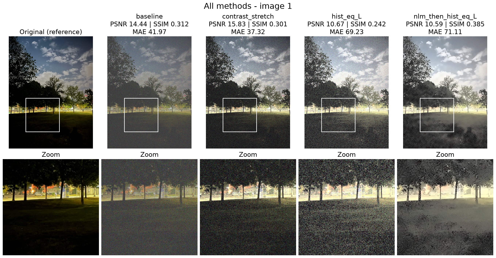
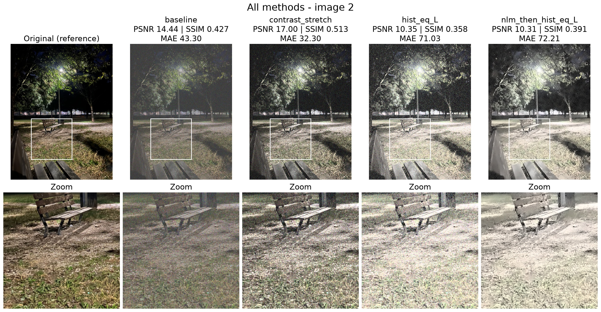
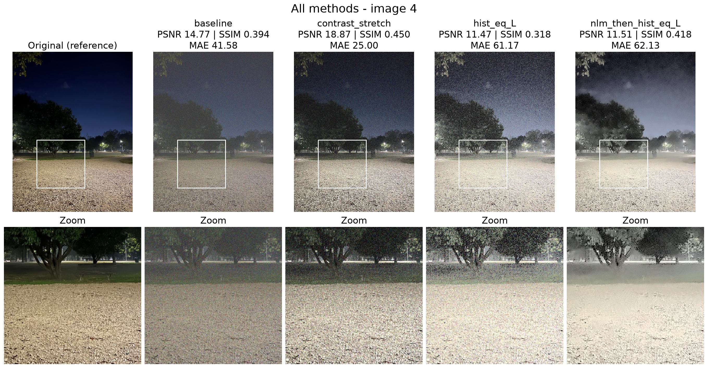

This homework builds and compares a small pipeline to enhance colour photos with non-uniform illumination, low contrast and noise, using only classical image processing (OpenCV and NumPy, no deep learning). The aim is not to rebuild the scene perfectly, but to justify each choice and to study the trade-offs between visible detail, noise and natural appearance.
I use three of my own night photos (iPhone 13 Pro Max, 28 October 2026, 3024 × 4032 px): 1.jpg, a park with a cloudy sky and very dark grass; 2.jpg, a bench under a street lamp, with strong light and deep shadows; 4.jpg, a gravel path with dark trees under a dark blue sky. They have low contrast, deep shadows and uneven light: in each photo 55–58% of the pixels are very dark (L* < 20 on the 0–100 CIE Lab scale). The photos were converted from HEIC to JPEG (quality 95) and from Display P3 to sRGB, and all metadata (EXIF, GPS) was removed. Licence: CC BY 4.0 (own work). The images are in the repository (data/original, with IMAGE_SOURCES.md).
Each photo is resized with OpenCV INTER_AREA so that its longest side is 800 px (600 × 800). This resized image is the reference, saved as PNG in data/reference. The degraded version is made in a fixed, reproducible way (src/degrade.py), with the same parameters and the same random seed for every photo: (1) the contrast is halved around mid-grey, Id = 128 + 0.5 (I − 128); (2) Gaussian noise with mean 0 and standard deviation σ = 10 (0–255 scale) is added, with seed 42; (3) the values are clipped to [0, 255], rounded and saved as lossless PNG in data/degraded. Because the photos are dark, pulling them towards mid-grey also makes them brighter, like a grey veil (mean L* from 22–25 to 39–40), and it halves their colour saturation (mean chroma from 8.0–14.3 to 4.3–7.0 before the noise; L* and chroma measured with cv2.cvtColor to Lab).
The original images serve only as references for evaluating these synthetic degradations. In real-world scenarios a clean reference is usually not available.
All methods take the same degraded images and use the same parameters for every photo (src/methods.py; all settings are at the top of run_all.py).
cv2.equalizeHist [1, 5] is applied to the L channel only; a and b are kept, so the hue does not change. The tones change in a strongly non-linear way, and the many dark levels of a night photo are spread over a wide range, which also amplifies the noise in large dark areas.cv2.fastNlMeansDenoisingColored [1, 2] with h = hColor = 5, 7 × 7 patches and a 21 × 21 search window; then M3. Denoising comes first, because equalization amplifies noise. Denoising may also smooth fine details: a larger h removes more noise but also more image detail [1]. We tried h = 3, 5, 7 and 10. With h = 10 the trees and the gravel became flat, “painted” areas; with h = 3 much grain was left. h = 5 looked like the best balance, and it also had the highest SSIM on 1.jpg and 2.jpg (0.385 and 0.391) and almost the highest on 4.jpg (0.418; 0.424 with h = 7).For each photo and method, three metrics compare the result with the reference: PSNR in dB (own implementation, equal to cv2.PSNR; higher is better), SSIM [3] (scikit-image [4], computed per colour channel and averaged, data range 255; higher is better) and MAE, the mean absolute error (own implementation; lower is better). For each photo and method, a side-by-side figure (original | degraded | result) is saved in results/figures. This report shows one summary figure per photo with all methods and a zoomed square (bottom row, shown without smoothing), with the same intensity scale in every panel. Software: Python 3.11, NumPy 2.4.6, OpenCV 5.0.0.93, scikit-image 0.26.0, Matplotlib 3.11.2. One command (python run_all.py, about 20 s) makes all images, figures and results/metrics.csv; running it twice gives identical files.
Table 1. Metrics against the reference for each photo and method (PSNR in dB and SSIM: higher is better; MAE: lower is better). Best value of each column in bold.
| Method | 1.jpg | 2.jpg | 4.jpg | Mean of the 3 photos | ||||||||
|---|---|---|---|---|---|---|---|---|---|---|---|---|
| PSNR | SSIM | MAE | PSNR | SSIM | MAE | PSNR | SSIM | MAE | PSNR | SSIM | MAE | |
| M1 Baseline (degraded) | 14.44 | 0.312 | 41.97 | 14.44 | 0.427 | 43.30 | 14.77 | 0.394 | 41.58 | 14.55 | 0.378 | 42.28 |
| M2 Contrast stretching (L) | 15.83 | 0.301 | 37.32 | 17.00 | 0.513 | 32.30 | 18.87 | 0.450 | 25.00 | 17.24 | 0.421 | 31.54 |
| M3 Histogram equalization (L) | 10.67 | 0.242 | 69.23 | 10.35 | 0.358 | 71.03 | 11.47 | 0.318 | 61.17 | 10.83 | 0.306 | 67.14 |
| M4 Denoising + equalization | 10.59 | 0.385 | 71.11 | 10.31 | 0.391 | 72.21 | 11.51 | 0.418 | 62.13 | 10.80 | 0.398 | 68.48 |

Figure 1. 1.jpg. Top: the whole images (the white square is the zoom area). Bottom: the zoom (lit tree line and dark grass).
Contrast stretching (M2) has the best PSNR and the lowest MAE on all three photos, and the best SSIM on 2.jpg and 4.jpg. It removes most of the grey veil (mean L* 35–38) and gives back strong blacks and highlights, so the clouds, the tree lines and the gravel are clear and the scene still looks like a night photo, with no colour shift. The price is noise: the grain is stretched together with the details (zooms in Fig. 1–3), and on 1.jpg its SSIM (0.301) is even a little lower than that of the degraded image (0.312).
Histogram equalization (M3) has the lowest SSIM on all photos and a PSNR of only 10.4–11.5 dB, about 3–4 dB below the baseline. It spreads L over the whole range, so the mean L* becomes 50.6 on every photo (references: 22–25): the night becomes mid-grey. It shows the most detail in the shadows (the grass in Fig. 1, the dark trees in Fig. 3), but with very strong grain in all the dark areas.
Denoising + equalization (M4) has almost the same PSNR and MAE as M3, because it has the same brightness (mean L* about 51), but a higher SSIM on every photo (0.385, 0.391 and 0.418 against 0.242, 0.358 and 0.318): the denoising removes most of the grain before the equalization. Its trade-offs are smoother textures (grass, gravel, leaves), dark blocky spots in the tree tops (Fig. 1 and 3), and pale colours: denoising also removes the colour noise, and what is left is the halved colour of the degraded image (mean chroma 4.6–7.0, references 8.0–14.3).

Figure 2. 2.jpg. Zoom: the bench, its shadow and the grass under the street lamp.

Figure 3. 4.jpg. Zoom: the trees, the lit edge of the lawn and the gravel.
Case 1 — the same PSNR, a very different image (M3 and M4). On 4.jpg, M3 and M4 have almost the same PSNR (11.47 and 11.51 dB) and MAE (61.17 and 62.13), and on 2.jpg too (10.35 and 10.31 dB). But M3 is covered in grain, while M4 is clean (Fig. 2 and 3, zooms). PSNR and MAE average the error of single pixels, and here the error is dominated by the big global change of brightness (both methods make the night mid-grey), so the noise hardly changes the numbers. SSIM compares local mean, contrast and structure, so it sees the difference (0.318 against 0.418 on 4.jpg).
Case 2 — the metrics disagree with each other and with the eye (1.jpg). On 1.jpg, M4 has the best SSIM (0.385) but the lowest PSNR (10.59 dB), and it does not look best: the grass becomes grey and blotchy and the colours are pale. Contrast stretching has the best PSNR (15.83 dB) and MAE, but an SSIM below the degraded image (0.301 against 0.312), although it clearly looks better than the degraded image: the grey veil is gone and the clouds and the tree line are sharp. A numerical improvement is therefore not always a more pleasing image, and no method should be chosen with one metric alone.
2.jpg (Fig. 2). I prefer contrast stretching. The bench, its shadow, the tree trunks and the light under the lamp are easier to see than in the degraded image, and the colours stay natural. The trade-off is visible grain on the gravel and the grass. M4 is cleaner and shows the dark grass better, but the grass and the gravel look smooth, almost painted, and the colours are pale; M3 makes the whole scene grey and grainy. There are no halos, because M2 and M3 change every pixel with the same global curve.
4.jpg (Fig. 3). I prefer contrast stretching again: the gravel keeps a crisp texture, the dark blue of the sky comes back and the trees separate well from the sky. The artifact is noise, strongest in the sky and in the dark trees. M4 removes this noise but turns the gravel into a smooth, pale surface and adds dark blocky spots in the tree tops (loss of detail), while M3 shows more of the dark trees but with the strongest grain.
Limitations. Only three photos, all taken at night. The synthetic degradation (a global contrast reduction towards mid-grey plus Gaussian noise) is simpler than real low-light noise, which depends on the brightness and on the colour channel; it also brightens and desaturates the photos, and none of the methods gives the colour back, because M2–M4 change only L. The denoising strength h was chosen by looking at the results, and the percentiles (1 and 99) were not optimised. The references are themselves phone night photos with their own noise and processing, so they are not a perfect ground truth.
For these night photos no method is best in every way. Linear contrast stretching on the luminance is the simplest method, it is the best by PSNR and MAE (and by SSIM on two photos), and it keeps a natural night look, but it amplifies the noise. Histogram equalization reveals the most shadow detail, but it makes the night mid-grey and very grainy. Denoising before the equalization removes most of that grain and clearly raises SSIM, at the cost of smoother textures and pale colours, while its PSNR stays low because of the change of brightness. The best choice depends on the goal: a natural image (contrast stretching) or the most visible detail in the dark areas (denoising + equalization).
[1] OpenCV documentation: Histogram Equalization; Image Denoising (fastNlMeansDenoisingColored); Color conversions. https://docs.opencv.org
[2] A. Buades, B. Coll, J.-M. Morel, “A non-local algorithm for image denoising,” Proc. IEEE Conference on Computer Vision and Pattern Recognition (CVPR), 2005.
[3] Z. Wang, A. C. Bovik, H. R. Sheikh, E. P. Simoncelli, “Image quality assessment: from error visibility to structural similarity,” IEEE Transactions on Image Processing, 13(4), 600–612, 2004.
[4] scikit-image documentation: skimage.metrics.structural_similarity. https://scikit-image.org
[5] R. C. Gonzalez, R. E. Woods, Digital Image Processing, 4th ed., Pearson, 2018.